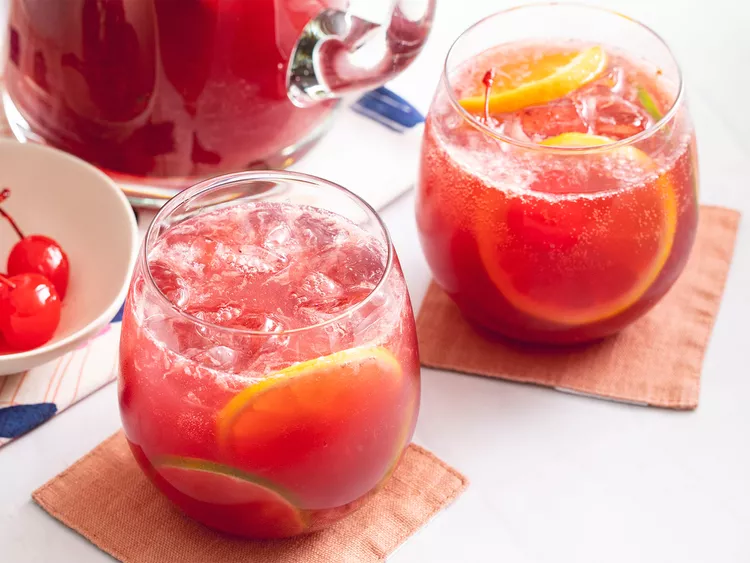

Sangria
Home

Description
The best sangria recipe I've been able to hone to perfection for summer parties! I like to use a fruity Spanish red wine. When you need a crowd-pleasing cocktail, sangria is the obvious choice. A pitcher of sangria is the perfect summer drink to sip on at your backyard barbecue or party. So, let us introduce you to the best sangria recipe on the internet. It's easy to make and, even better, it's irresistibly delicious.
Ingredients
- 1 (750 milliliter) bottle dry red wine
- 1/2 cup brandy
- 1/2 cup frozen lemonade concentrate
- 1/3 cup orange juice
- 1/4 cup lemon juice
- 1/4 cup white sugar(optional)
- 1 medium orange, sliced into rounds
- 1 medium lemon, sliced into rounds
- 1 medium lime, sliced into rounds
- 8 maraschino cherries
- 2 cups carbonated water(optional)
Steps
- Gather all ingredients
- Mix together red wine, brandy, triple sec, lemonade concentrate, orange juice, lemon juice, and sugar in a bowl. Add orange, lemon, and lime slices and maraschino cherries.
- Serve immediately over ice, or refrigerate 8 hours to overnight for best flavor. For a fizzy sangria, add club soda just before serving.